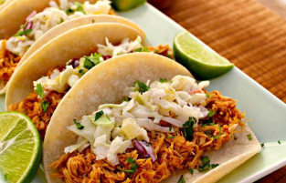

Receta: Tacos de Pollo
Una receta deliciosa para preparar tacos de pollo caseros.
Ingredientes
- 500 g de pechuga de pollo
- 8 tortillas de maíz
- 1 tomate picado
- 1/2 cebolla picada
- Lechuga rallada
- Sal al gusto
- Pimienta al gusto
- 1 cucharada de aceite
Pasos
- Cortar la pechuga de pollo en trozos pequeños.
- Calentar el aceite en una sartén y cocinar el pollo.
- Agregar sal y pimienta al gusto.
- Calentar las tortillas de maíz.
- Colocar el pollo cocido sobre cada tortilla.
- Agregar tomate, cebolla y lechuga.
- Servir los tacos y disfrutar.
